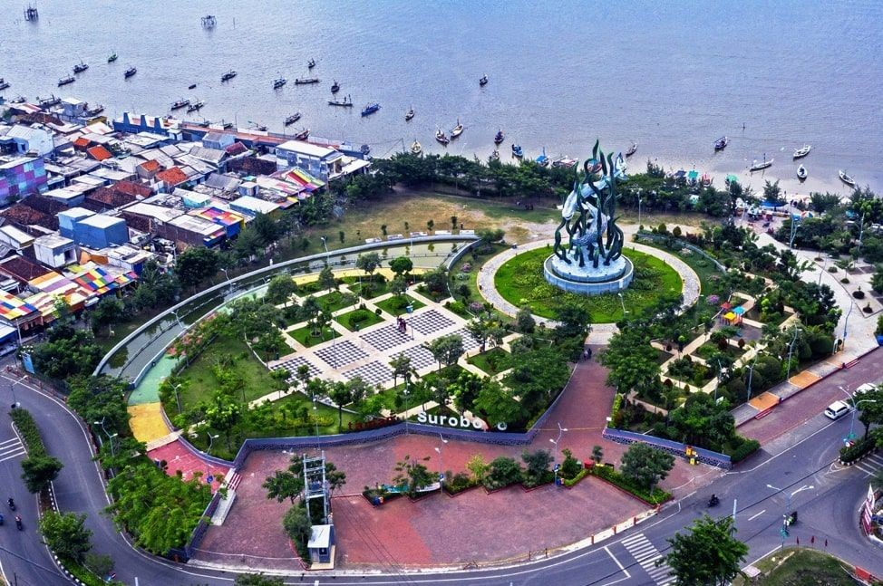

Sejarah

Kota Surabaya memiliki sejarah yang panjang dan kaya, yang bermula dari masa Majapahit hingga era kolonial dan perjuangan kemerdekaan Indonesia.
Nama "Surabaya" sendiri memiliki asal-usul yang menarik. Kota ini juga dikenal sebagai Kota Pahlawan karena peran pentingnya dalam perjuangan kemerdekaan Indonesia,
terutama dalam Pertempuran 10 November 1945.
Nama "Surabaya" berasal dari kata dalam bahasa Jawa kuno, yaitu "Sura" yang berarti harimau dan "Baya" yang berarti buaya.
Nama ini menggambarkan keberanian dan kekuatan yang menjadi ciri khas kota ini.
Meskipun sejarah awal Kota Surabaya masih kabur, kota ini memiliki akar yang dalam dalam sejarah Nusantara.
Pada abad ke-14, Surabaya menjadi bagian dari Kerajaan Majapahit yang merupakan salah satu kerajaan terbesar di Nusantara pada masa itu.
Kota ini menjadi pelabuhan penting yang berperan dalam perdagangan internasional.
Geografis

Kota Surabaya terletak di Provinsi Jawa Timur, Pulau Jawa, Indonesia. Secara geografis,
Surabaya terletak di lintang selatan 7°9′ hingga 7°21′ dan bujur timur 112°36′ hingga 112°54′.
Kota ini memiliki batasan wilayah yang unik, yaitu Selat Madura di utara dan timur, Kabupaten Sidoarjo di selatan,
serta Kabupaten Gresik di barat.
Wilayah Surabaya berada di hilir Daerah Aliran Sungai Brantas yang bermuara di Selat Madura.
Beberapa sungai yang melintasi kota ini antara lain Kali Surabaya, Kali Mas, Kali Jagir, dan Kali Lamong.
Sungai-sungai ini memberikan pengaruh penting terhadap sistem drainase dan transportasi air di kota ini.
Wisata
Kota Surabaya juga menawarkan berbagai tempat wisata menarik yang dapat Anda kunjungi,
Berikut adalah beberapa destinasi populer di Surabaya.
taman bungkul

Taman Bungkul adalah taman wisata kota yang terletak di pusat kota Surabaya,
tepatnya di Jalan Raya Darmo. Taman ini berdiri di area seluas 900 meter persegi.
Dilengkapi berbagai fasilitas penunjang, seperti amfiteater berdiameter 33 meter,
lajur joging, lahan papan luncur, taman bermain anak-anak, air mancur, dan pujasera
Selain itu, taman ini juga dilengkapi akses internet nirkabel yang terbuka untuk umum
sehingga siapapun bisa mengakses internet selama di taman ini. Letaknya yang berada di
jantung Kota Surabaya membuat taman ini tidak hanya berfungsi sebagai lahan hijau saja,
tetapi juga sebagai destinasi wisata yang populer di Surabaya
Museum 10 November
Monumen Tugu Pahlawan dibangun untuk mengenang sejarah perjuangan Pahlawan Kemerdekaan
Bangsa Indonesia dalam peristiwa pertempuran 10 Nopember 1945 di Surabaya.
Bangunan monumen dibangun dengan bentuk menyerupai "paku terbalik" setinggi 40,50 meter.
Untuk melengkapi monumen, dibangunlah fasilitas sejarah yaitu Museum 10 Nopember yang di dalamnya terdapat
ratusan koleksi seperti koleksi foto, senjata rampasan dan artefak peninggalan pertempuran di Surabaya dan
fasilitas pendukung lain yaitu diorama elekronik dan diorama statis.
Adapun jam operasionalnya adalah dari hari Selasa sampai Minggu mulai pukul 08.00 hingga 15.00 WIB,
dan tutup pada hari Senin. Harga Tiket Masuk (HTM) sebesar Rp 5.000 untuk umum, dan gratis bagi pelajar dan
mahasiswa yang membawa Kartu Tanda Mahasiswa.